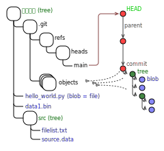

파일구조
아래 그림과 같이 .git 디렉토리에는 저장소의 모든 정보가 저장되어 있습니다.
- object의 종류는 blob, tree, commit, tag가 있습니다.
- refs/heads/ 로부터 가장 최근의 commit을 가리키는 HEAD 파일이 있습니다.
- commit은 parent commit의 해시값과 tree object의 해시값을 가지고 있습니다.
- tree object는 blob object와 tree object를 가리키는 정보를 가지고 있습니다.

파일구조
"git-tree.svg", iseohyun.com, CC-BY-SA
https://github.com/iseohyun/git-tutorial.git의 structure를 살펴보면 다음과 같습니다.
.git 분석 예시
.git/refs/heads/master -> "d608c5..." .git/objects/d6/08c5... -> commit : "tree b5c012... parent 5cc5bd... ...(commit info)" .git/objects/b5/c012... -> tree : . 100644 blob f6fcee... all_files.txt 100644 blob 937ee7... all_object.txt 100644 blob 6a5d71... data1.bin 100644 blob 2484e3... hello_world.py 040000 tree d3a9e2... src ++++++++++++ 재사용 ++++++++++++ 100644 blob 861ef2... struct.txt 5cc5bd... .git/objects/5c/c5bd... -> commit : "tree f330a3... ...(commit info)" .git/objects/f3/30a3... -> tree : . 100644 blob 6a5d71... -> blob : data1.bin 100644 blob 00950d... -> blob : print('hello_world.py') 040000 tree d3a9e2... .git/objects/d3/a9e2... -> tree : ./src 100644 blob 6e39da... -> blob : filelist.txt 100644 blob 8bb656... -> blob : source.data
git log
C:\git-tutorial\structure> git log commit d608c5b1c6cbbf3dc4e97df5d38b94cd480aac28 (HEAD -> master) Author: iseohyun <iseohyun@hanmail.net> Date: Sun Dec 29 20:32:15 2024 +0900 new commit commit 5cc5bd48ee208c668e5ef57de965641ddbcdfa65 Author: iseohyun <iseohyun@hanmail.net> Date: Sun Dec 29 20:09:37 2024 +0900 first commit
조회 방법
아래 명령어를 통해 모든 object를 조회할 수 있습니다.
git rev-list --all --objects
조회된 object의 해시값을 통해 object의 내용을 확인할 수 있습니다.
git cat-file -p object_hash
동봉된 py 또는 powershell script를 통해 object의 내용을 확인할 수 있습니다.
print-obj.ps1, print-obj.py
스크립트 수행 예시
Hash Type File Name ----------------------------------------------------------- d608c5b1c6cbbf3dc4e97df5d38b94cd480aac28 commit (no file) 5cc5bd48ee208c668e5ef57de965641ddbcdfa65 commit (no file) b5c012807e706ba20aebb4e48b029ae10d2817f9 tree f6fcee0ba4034a631b8c074af61053449dd7197c blob all_files.txt 937ee706ca07804619ae9ec79dfbe3bc4b626e9b blob all_object.txt 6a5d7143202d163bd88466e1d1582dfc796409eb blob data1.bin 2484e3aafa7c1e0e033082265a24674404096a04 blob hello_world.py d3a9e29f4aa2d93cf19c9cbb506dcf18fb3f7b15 tree src 6e39dad2f1d91e49bada65481fb6acfb30735222 blob src/filelist.txt 8bb6564fba2e5db883bbaefa432d24978ddcd830 blob src/source.data 861ef265d8155a73d52c7731cfa7d8574790771f blob struct.txt f330a32d3cb1e6e5453dbc829a9ae41f0175fe71 tree 00950d9ac57ceeabf45f9120c2615199746d35fb blob hello_world.py